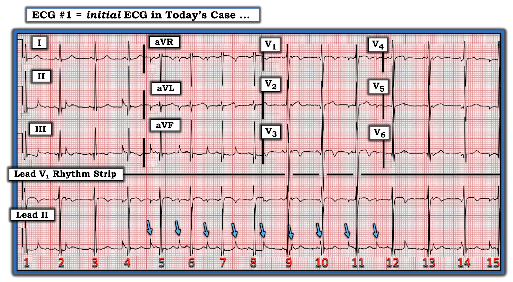
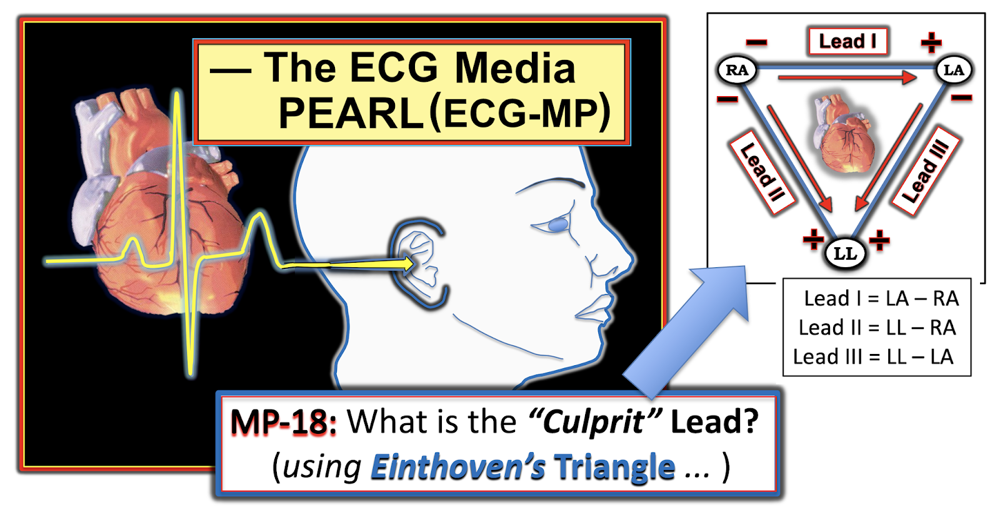
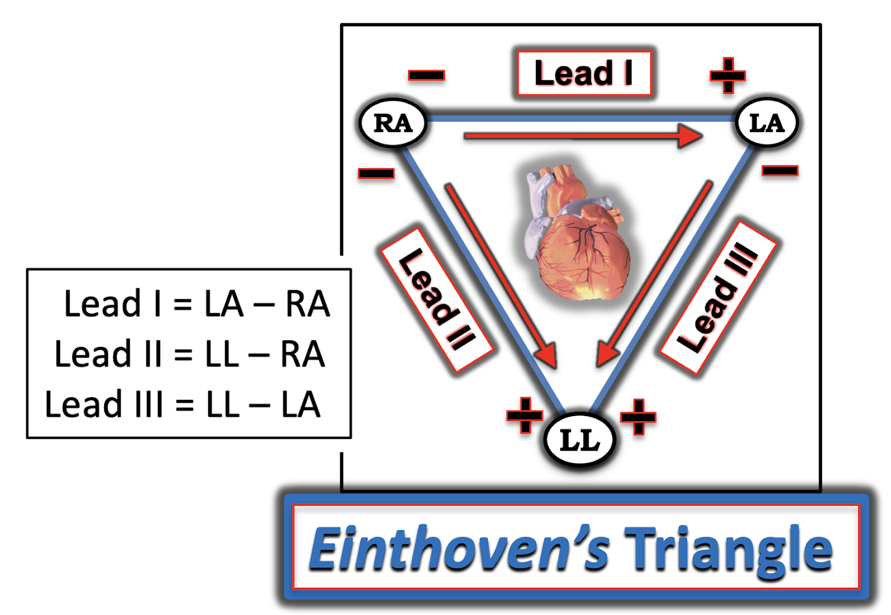
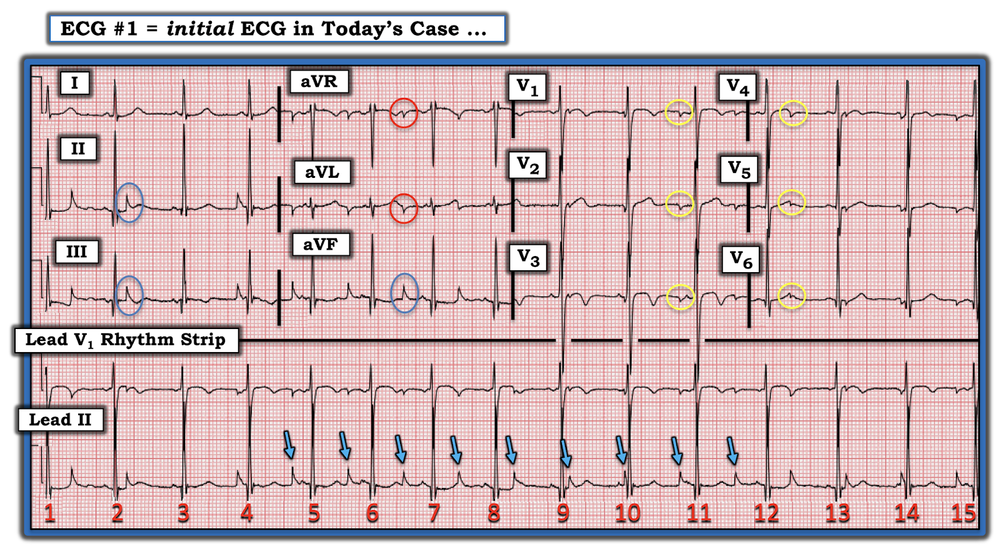
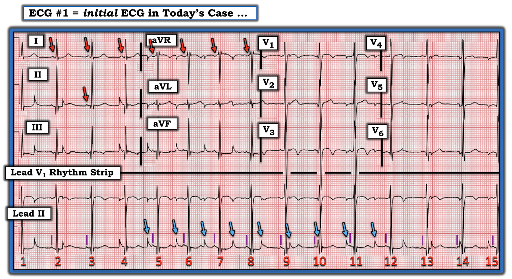
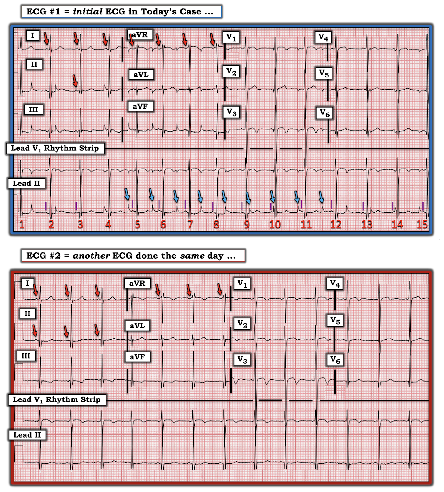
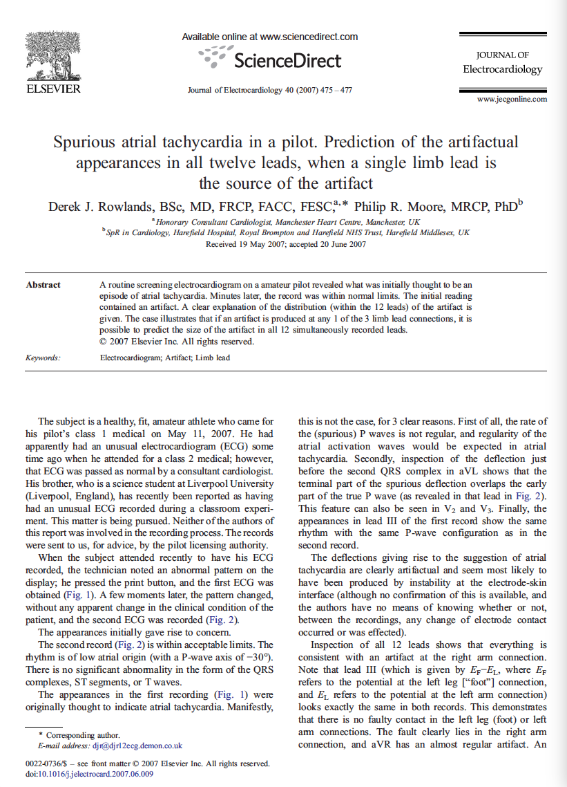

ECG Blog #255 (18) — Vì sao lại có phân ly nhĩ thất?
Điện tâm đồ trong Hình-1 được ghi ở một người trẻ tuổi đến khám vì một cơn tiền ngất.
- Nguyên nhân gây ra phân ly nhĩ thất (AV dissociation) là gì?


Suy nghĩ ban đầu của tôi khi nhìn bản ghi này:
Khi lần đầu nhìn thấy điện tâm đồ này — "con mắt" của tôi lập tức bị hút vào những biến dạng mà tôi đánh dấu bằng các mũi tên XANH DƯƠNG trong Hình-1. Ban đầu tôi nghĩ bản ghi này hẳn phải là một dạng phân ly nhĩ thất bất thường nào đó.
- THÚ NHẬN: Đây là một bản ghi đánh lừa! Tôi hoàn toàn thừa nhận rằng mình cố ý chọn bản ghi này để minh họa việc bị nhiễu (artifact) đánh lừa dễ dàng đến mức nào. Mục tiêu của tôi trong bài này là ôn lại một số cách nhận ra nhanh khi có nhiễu — vì điều này thường không được dạy "trong sách giáo khoa".
=======================================
LƯU Ý: Đến đây, một số bạn đọc có thể muốn nghe ECG Audio PEARL dài 7:45 phút trước khi đọc Suy nghĩ của tôi về điện tâm đồ trong Hình-1. Bạn có thể tham khảo Suy nghĩ của tôi về bản ghi này bất cứ lúc nào (nằm bên dưới ECG MP-18).
=======================================


ECG Media PEARL #18 (7:45 phút Audio) hôm nay — Ôn lại cách nhận diện nhiễu (Artifact) — và — cách dùng Tam giác Einthoven (Einthoven's Triangle) để xác định trong vòng vài giây "thủ phạm" là chi nào gây ra nhiễu trên điện tâm đồ của bạn (Audio Pearl này được đăng lần đầu trong ECG Blog #201. Bài đó minh họa một ca trong đó nhiễu ban đầu bị nhầm với ST chênh lên cấp).


LÀM SAO tôi biết có nhiễu trong Hình-1?
Có một số manh mối gợi ý mạnh rằng các biến dạng có mũi tên XANH DƯƠNG trong Hình-1 hoàn toàn không phải là sóng P — mà thay vào đó chỉ vào nhiễu. Các manh mối này gồm:
- Hình dạng của các biến dạng này mang tính hình học. Nghĩa là — những biến dạng này ở mỗi chuyển đạo thành dưới cao hơn nhiều so với biên độ sóng P thường gặp. Chúng gồm một đường đi lên rất dốc và thẳng, kết thúc bằng một đỉnh nhọn. Rất bất thường khi thấy một sóng P sinh lý có đỉnh nhọn như vậy mà đáy lại hẹp đến thế. Ở chỗ khác, trong chuyển đạo aVR và aVL — các biến dạng này hiện ra như một vạch âm ngắn, mảnh. Sóng P sinh lý gần như luôn có ít nhất một chút bề rộng (và không nên trông như một vạch thẳng đứng rất mảnh). Vẻ "hình học" này của các biến dạng trông giống nhiễu (và khi những biến dạng trông lạ "giống" nhiễu — đó là vì chúng thường đúng là nhiễu).
- Như các mũi tên XANH DƯƠNG trên dải nhịp chuyển đạo II dài gợi ý — sự phân bố của các biến dạng này không hợp lý về mặt sinh lý. Nhịp nhĩ và nhịp bộ nối có thể phân ly với tần số gần bằng nhau. Điều này xảy ra trong phân ly nhĩ thất đồng nhịp (isorhythmic) (Xem ECG Blog #195), trong đó sóng P và các phức bộ QRS bộ nối có thể xê dịch vị trí so với nhau, nhưng vẫn nằm gần nhau suốt chiều dài dải nhịp. Ngược lại, trong Hình-1 — các biến dạng có mũi tên XANH DƯƠNG xuất hiện ở mọi pha của khoảng R-R. Và dù có thể có blốc AV hoàn toàn — điều này thường không xảy ra khi cả tần số nhĩ lẫn tần số bộ nối đều nhanh như trong Hình-1.
- Sóng P xoang nền thật sự được thấy đều đặn ở một số chuyển đạo trong Hình-1. Manh mối TỐT NHẤT để nhận ra nhiễu — là xác định được nhịp gốc nền vẫn tiếp diễn không bị ảnh hưởng bởi những biến dạng mà bạn nghi là nhiễu. Các sóng P bình thường xuất hiện đều đặn này thấy rõ nhất ở chuyển đạo I của Hình-1.
- Kích thước tương đối của các biến dạng bị nghi là nhiễu trong Hình-1 thể hiện đúng tỷ lệ kích thước tương đối như dự kiến khi nhiễu do một chi "thủ phạm" gây ra (như trong các vòng tròn màu ở Hình-2).


ĐIỂM THEN CHỐT (PEARL) #1: Kích thước tương đối và sự phân bố của các biến dạng nhiễu trong Hình-2 tuân theo chính xác vị trí và mức độ biến dạng biên độ tương đối mà Tam giác Einthoven dự đoán. Ý tôi là:
- Chiều cao của gai nhiễu xấp xỉ bằng nhau ở 2 chuyển đạo chi (tức là, ở chuyển đạo II và III) — và hoàn toàn không thấy ở chuyển đạo chi thứ 3 (tức là không hề thấy nhiễu ở chuyển đạo I). Theo Tam giác Einthoven (Xem hình ở trên được đăng kèm ECG Media Pearl hôm nay — hình này có Tam giác Einthoven ở góc bên phải) — việc thấy biên độ nhiễu bằng nhau ở chuyển đạo II và chuyển đạo III khu trú “chi thủ phạm” vào điện cực LL ( = Left Leg – chân trái).
- Việc không có chút nhiễu nào ở chuyển đạo I phù hợp với điều này — vì chuyển đạo chi lưỡng cực chuẩn I được tạo ra từ hiệu điện thế giữa điện cực RA ( = Right Arm – tay phải) và điện cực LA ( = Left Arm – tay trái), nên sẽ không bị ảnh hưởng nếu nguồn nhiễu là chân trái.
- Như tôi bàn chi tiết trong Pearl Audio MP-18 ở trên — việc thấy nhiễu có biên độ lớn nhất ở chuyển đạo aVF đơn cực xác nhận rằng Chân Trái là “chi thủ phạm” (culprit extremity).
LƯU Ý: Dưới đây tôi in lại trong Hình 5, 6 và 7 — bài báo 3 trang của Rowlands và Moore (J. Electrocardiology 40: 475-477, 2007) — đây là bài tổng quan TỐT NHẤT mà tôi từng đọc về cơ sở sinh lý giải thích kích thước tương đối của các biến dạng nhiễu khi nhiễu phát sinh từ một chi duy nhất. Các nguyên lý này được minh họa trong Hình-2:
- Như các phương trình ở trang 477 trong bài của Rowlands và Moore cho thấy: i) Biên độ nhiễu lớn nhất ở chuyển đạo tăng thế đơn cực của chi “thủ phạm” — chính là chuyển đạo aVF trong Hình-2 (nằm trong vòng tròn XANH DƯƠNG); và, ii) Biên độ nhiễu ở 2 chuyển đạo tăng thế còn lại (tức là chuyển đạo aVR và aVL) bằng khoảng 1/2 biên độ nhiễu ở chuyển đạo aVF (nằm trong các vòng tròn ĐỎ ở Hình-2).
- Tương tự — biên độ các biến dạng nhiễu ở 6 chuyển đạo trước ngực đơn cực trong Hình-2 cũng giảm đáng kể so với biên độ lớn nhất thấy ở chuyển đạo II, III và aVF (nằm trong các vòng tròn VÀNG ở Hình-2).
ĐIỂM THEN CHỐT (PEARL) #2: Như đã nhắc ở trên, manh mối TỐT NHẤT để khẳng định những biến dạng đáng ngờ thật sự là do nhiễu — là NẾU bạn xác định được nhịp gốc nền vẫn tiếp diễn không bị ảnh hưởng bởi những biến dạng mà bạn nghi là nhiễu.
- Các mũi tên ĐỎ trong Hình-3 cho thấy rõ nhịp xoang đều nền vẫn tiếp diễn. Điều này dễ thấy nhất ở chuyển đạo I — vì không thấy nhiễu ở chuyển đạo này. Từ 3 sóng P xoang ở chuyển đạo I — có thể thấy khoảng P-P đều tiếp tục với 4 sóng P xoang đúng lúc xuất hiện sau khi chuyển sang chuyển đạo aVR (các mũi tên ĐỎ ở chuyển đạo aVR).
- Các vạch TÍM thẳng đứng trên dải nhịp chuyển đạo II dài đánh dấu các sóng P xoang xuất hiện đều đặn, không liên quan tới các biến dạng nhiễu có mũi tên XANH DƯƠNG. Điều này chứng minh các biến dạng ấy là nhiễu.


ĐIỂM THEN CHỐT (PEARL) #3: Mục tiêu của việc xác định nguồn gốc và nguyên nhân gây nhiễu là: i) Tránh đọc sai điện tâm đồ (Ví dụ, ca hôm nay không hề có phân ly nhĩ thất!); và, ii) Hy vọng khắc phục được nguyên nhân gây nhiễu để ghi được một bản ghi chất lượng tốt hơn.
- Quá trình suy luận ở trên xác định nguồn gốc của nhiễu trong bản ghi hôm nay là từ Chân Trái.
- Việc nhiễu trong ca hôm nay hoàn toàn không liên quan đến phức bộ QRS (tức là các mũi tên XANH DƯƠNG trong Hình-3 xuất hiện ở mọi thời điểm của chu chuyển tim) — giúp loại trừ các nguyên nhân liên quan đến co bóp của tim (chẳng hạn điện cực tiếp xúc với một động mạch đang đập).
- Về lâm sàng — Giờ đây khi đã biết nhiễu phát sinh từ một điều gì đó đang xảy ra ở chân trái của bệnh nhân — cách TỐT NHẤT để xác định nguyên nhân gây nhiễu là ĐẾN bên giường và NHÌN bệnh nhân (đặc biệt chú ý tới chân trái của bệnh nhân, với hy vọng tìm ra nguyên nhân của hoạt động nhiễu lặp đi lặp lại).
DIỄN TIẾN của ca hôm nay: Để rõ ràng hơn — tôi đã thêm điện tâm đồ thứ 2 được ghi cùng ngày trên bệnh nhân hôm nay (Hình-4).
- Ở điện tâm đồ #2 cũng thấy những sóng P xoang biên độ nhỏ tương tự với cùng khoảng PR hơi ngắn, giống như ở điện tâm đồ #1 ban đầu. Nhưng lưu ý rằng không còn thấy nhiễu nào nữa ở điện tâm đồ #2 (tức là ở bản ghi phía dưới trong Hình-4).
- Việc hình thái sóng P ở điện tâm đồ #2 giống hệt các sóng P xoang mà chúng ta đã thấy được ở điện tâm đồ #1 (các mũi tên ĐỎ trên điện tâm đồ ban đầu) — càng xác nhận thêm rằng các biến dạng trông có vẻ hình học (được đánh dấu bằng mũi tên XANH DƯƠNG ở điện tâm đồ #1) thực chất là do một dạng nhiễu nào đó phát sinh từ bàn chân trái của bệnh nhân.
- T.B. (P.S.) — Có thể bạn đã để ý (và bị ấn tượng bởi) biên độ QRS tăng rõ rệt và các thay đổi ST-T ở chuyển đạo thành trước thấy trên cả điện tâm đồ #1 và điện tâm đồ #2. Các bản ghi này được ghi từ chính bệnh nhân mà tôi đã trình bày trong bài trước ECG Blog #254. Như đã bàn trong phần kết của ca đó — các dấu hiệu điện tâm đồ này không phải là hội chứng Wellens, cũng không phải HCM (bệnh cơ tim phì đại – Hypertrophic CardioMyopathy), cũng không phải LVH — mà thay vào đó, bằng cách loại trừ — được cho là một biến thể tái cực.


ĐIỀU CỐT LÕI: Bạn sẽ thường xuyên gặp nhiễu trong công việc lâm sàng thực tế. Chỉ cần luyện tập một chút, bạn có thể thành thạo việc nhận ra nhanh rằng những biến dạng bất thường (như những biến dạng thấy trong ca hôm nay) — là kết quả của một dạng nhiễu nào đó.
- Không có gì khác thể hiện các mối liên hệ toán học đã mô tả ở trên, trong đó biến dạng nhiễu lớn nhất bằng nhau ở 2 trong 3 chuyển đạo chi (và hoàn toàn không có nhiễu ở chuyển đạo chi thứ 3) — trong đó nhiễu lớn nhất ở chuyển đạo tăng thế đơn cực sẽ thấy ở điện cực chi chung cho 2 chuyển đạo chi có nhiễu lớn nhất (theo Tam giác Einthoven).
- Xác định xem các biến dạng nhiễu có mối liên hệ cố định với phức bộ QRS hay không (như đã thấy trong ECG Blog #201) — so với hoàn toàn không liên quan tới các phức bộ QRS kế cận (như trong bản ghi hôm nay) — sẽ ngay lập tức cho bạn biết NẾU các biến dạng nhiễu liên quan đến co bóp của tim (hoặc nhịp đập của động mạch) — hay — NẾU nhiễu liên quan đến một yếu tố gây ra tại chỗ nào đó.




==============================
Lời cảm ơn: Xin cảm ơn Ghady Rahhal (từ Virginia, Hoa Kỳ) đã chia sẻ ca bệnh và bản ghi này.
==================================
==============================
Các bài ECG Blog liên quan đến ca hôm nay:
- ECG Blog #201 — Ôn lại một ca nhiễu do nhịp đập động mạch (kèm cách suy ra chi "thủ phạm").
- ECG Blog #195 — Ôn lại hiện tượng gọi là phân ly nhĩ thất đồng nhịp (isorhythmic) (trong đó tần số nhĩ và tần số bộ nối [hoặc thất] gần như bằng nhau, nhưng sóng P không dẫn truyền xuống thất).
Về việc nhận diện NHIỄU trên điện tâm đồ:
- ECG Blog #148 — Nhiễu giả rung thất (VFib).
- ECG Blog #44 — Nhiễu do run trong bệnh Parkinson
- ECG Blog #139 — Nhiễu giả cuồng nhĩ (AFlutter).
- ECG Blog #132 — Thêm một ca nhiễu giả VT-VFib.
- Bài tổng quan ngắn của Tom Bouthillet về một số nguyên nhân gây nhiễu thường gặp.
Cuối cùng — tôi dẫn link tới một số ca minh họa lấy từ Dr. Smith’s ECG Blog. Với mỗi bài này — Hãy cuộn xuống cuối trang để xem Bình luận của tôi. Các ca này giúp hiểu sâu hơn về cách đánh giá NHIỄU:
- Bài ngày 27 tháng 9 năm 2019 trên Dr. Smith’s ECG Blog — ví dụ về cách nhận ra nguồn gốc của nhiễu từ chi.
- Bài ngày 17 tháng 10 năm 2020 trên Dr. Smith’s ECG Blog — ví dụ về nhiễu giống VT
- Bài ngày 30 tháng 1 năm 2018 trên Dr. Smith’s ECG Blog — về nhiễu do nhịp đập động mạch (Hãy bấm vào phần COMMENTS của bài này để xem phần bàn luận của tôi).